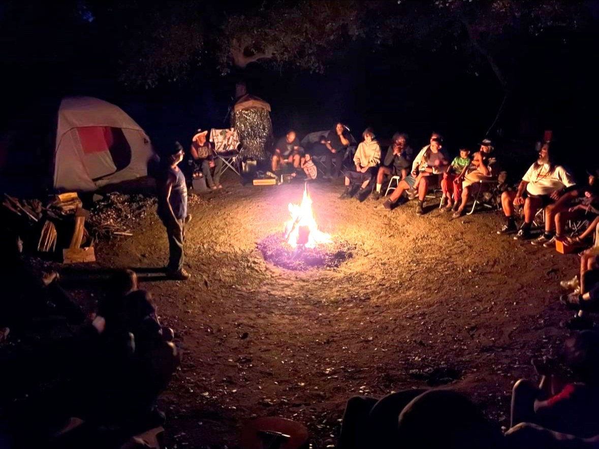
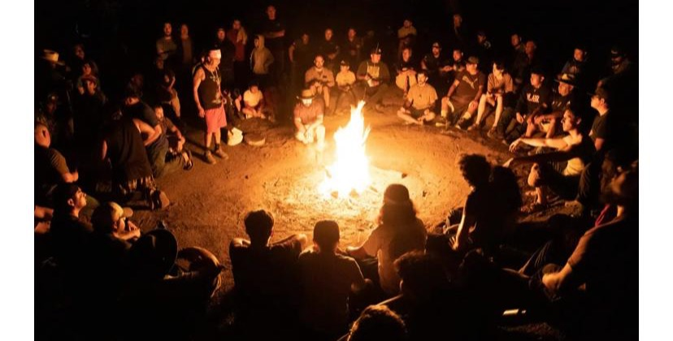
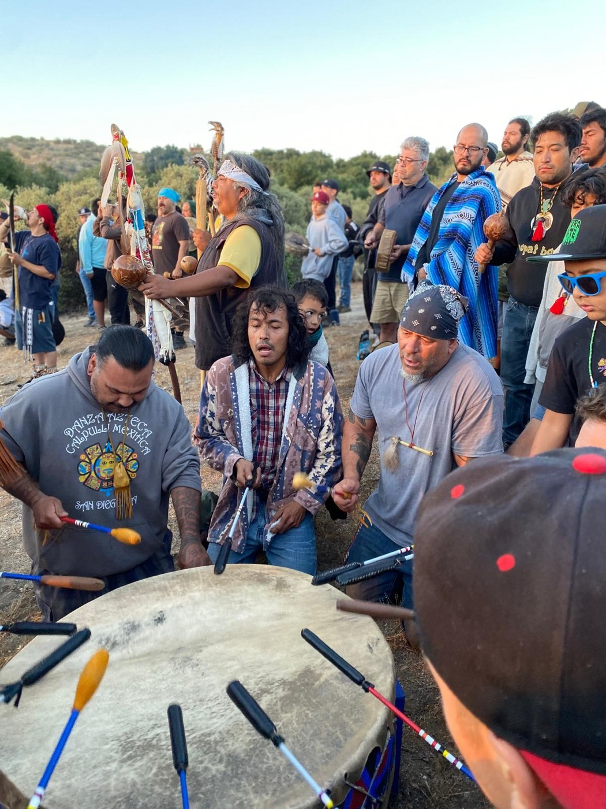
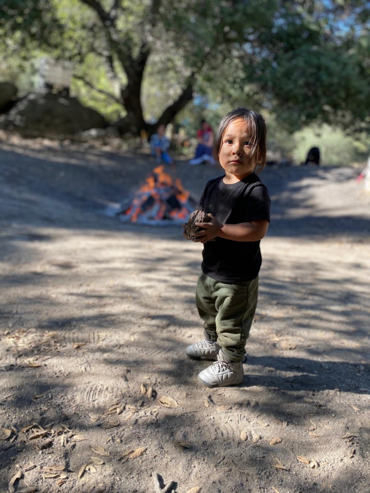
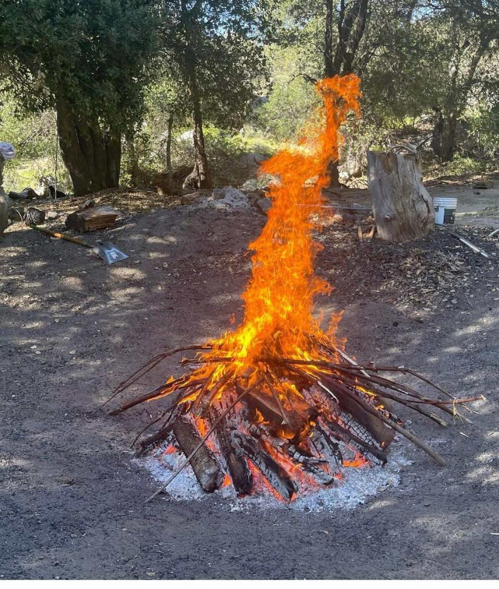

What began in 1998 with roughly 100 men has grown into a multi-generational gathering at the Manzanita Reservation, paired with Cihua Ollin, the "movement of women." Grandfathers, fathers, and sons sit in the same circle — the elders carry the songs and teachings, and the youngest learn by being there.
Hello relatives, we are excited to announce our 28th Annual Círculo de Hombres Men's Gathering. The gathering is held at the Manzanita Reservation, on land belonging to the Elliot family. There are important changes to this year's gathering, so please take time to read the information below.





This is our 28th year!!! Even though 28 years may seem like a long time, we acknowledge that gathering to share palabra in círculo has been part of our sacred heritage since time immemorial. The Men's Gathering is an opportunity for male-identifying relatives to experience story, laughter, ceremony, and reflection through an intercambio of words, feelings, pain, joy, and spiritual energy.
This tradition, handed down by ancestors, elders, grandparents, and families, is our way of cleansing from the false teachings and woundedness that have become part of our lives. We invite you to join us, and we look forward to sharing space together to continue these teachings for generations to come.
The San Diego Círculo de Hombres Men's Gathering is coordinated through Izcalli and the National Compadres Network. We hold immense gratitude for our Kumeyaay relatives and tribal communities who have allowed us to continue this sacred tradition on Kumeyaay land.
— Izcalli